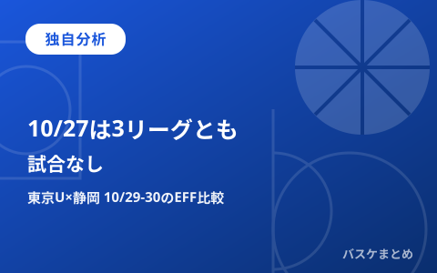

10/27は3リーグとも試合なし、独自分析「東京U×静岡」10/29-30の登録選手EFFを比較

10月27日(火)は、B.PREMIER・B.ONE・B.NEXTの3リーグとも試合がありません。中断明けに最初に組まれているのは、B.ONEの東京U×静岡の2連戦です。この記事では、2連戦に出る可能性がある登録選手を今季平均EFFで比べます。
東京Uは東京ユナイテッドバスケットボールクラブ、静岡はベルテックス静岡です。比べるのは登録選手のデータです。出場や勝敗の予測ではありません。
本日(10/27)・明日(10/28)は3リーグとも試合なし
公式日程では、10/27は3リーグとも試合が組まれていません。次の開催日はB.ONEが10/29です。B.PREMIERとB.NEXTは10/30です。
このため、10/28も試合はない見込みです。10/28の日程は日付を指定して確かめてはいません。
| リーグ | 10/27 | 次の開催日 |
|---|---|---|
| B.PREMIER | 試合なし | 10/30 |
| B.ONE | 試合なし | 10/29 |
| B.NEXT | 試合なし | 10/30 |
【独自分析】中断明けの最速カード「東京U×静岡」(10/29・30・B.ONE)
3リーグで最も早い試合は、10月29日(木)19:05開始のB.ONE「東京U vs 静岡」です。公式の試合詳細ページで確認できています。
翌10/30(金)も19:05から同じカードがあります。会場は2日とも江戸川区スポーツセンター(西葛西)です。10/30の試合は、東京Uと江戸川区の告知ページなど複数の出典で内容が一致しています。
当日のスタメンや出場状況は、まだ決まっていません。
【独自比較】登録選手の今季平均EFFランクイン数は東京Uが6人、静岡が3人
今季平均EFFのポジション別ベスト5・サブ5は、両クラブで合わせて9枠です。そのうち東京Uが6人、静岡が3人を占めます。
最も高いのは東京UのPFジョーダン・フェイゾンで28.2です。静岡で最も高いのはSFトレダリアス・マカラムで24.8です。2人の差は3.4です。
ランクインの人数や数値は、平均的な貢献度の目安です。出場時間や当日の起用までは分かりません。
| 位置 | 選手・所属 | 今季平均EFF | 試合数 | 区分 |
|---|---|---|---|---|
| PG | 山本 愛哉(静岡) | 15.2 | 9 | ベスト5 |
| SG | 川島 蓮(東京U) | 10.3 | 9 | ベスト5 |
| SF | トレダリアス・マカラム(静岡) | 24.8 | 9 | ベスト5 |
| PF | ジョーダン・フェイゾン(東京U) | 28.2 | 9 | ベスト5 |
| C | ジェイディエル・コルディリア(東京U) | 13.5 | 4 | ベスト5 |
| PG | ストックマンJr.ケドリック(東京U) | 6.9 | 9 | サブ5 |
| SG | 東 宏輝(東京U) | 7.8 | 9 | サブ5 |
| SF | ジェイデン・ガードナー(静岡) | 17.2 | 9 | サブ5 |
| PF | マックス・ヒサタケ(東京U) | 21.2 | 9 | サブ5 |
Q&A
Q. この記事は10/29の結果を予測するものですか？
A. いいえ。公式日程と、登録選手の今季平均EFFを並べて比べた記事です。当日のスタメンや順位への影響は、まだ分かりません。
出典:B.LEAGUE公式(日程・公式スタッツ、別記事作成時に確認済みのデータを含む)
https://www.bleague.jp/schedule/?tab=1&year=2026&mon=10&day=27(B.PREMIER日程・10/27)
https://www.bleague.jp/schedule/?tab=2&year=2026&mon=10&day=27(B.ONE日程・10/27)
https://www.bleague.jp/schedule/?tab=3&year=2026&mon=10&day=27(B.NEXT日程・10/27)
https://www.bleague.jp/game_detail/?ScheduleKey=507299(10/29 東京U vs 静岡 試合詳細)
https://www.bleague.jp/stats/?year=2026&tab=2&target=player-b2&value=EFFPG&o=desc&e=7&dt=avg(B.ONE 今季平均EFF)
https://www.bleague.jp/club_detail/?TeamID=1637(公式クラブ登録選手一覧)
https://www.bleague.jp/club_detail/?TeamID=2725(公式クラブ登録選手一覧)
https://www.bleague.jp/news/injury.html(公式インジュアリーリスト)
https://veltex.co.jp/schedule/list/(ベルテックス静岡公式・日程)
https://tubc.tokyo/news/detail/id=61069(東京ユナイテッド公式・静岡戦の告知)
https://tubc.tokyo/game_lp_202610129_20261030_1/(東京ユナイテッド公式・10/29-30の試合告知)
https://www.city.edogawa.tokyo.jp/event/08tubc.html(江戸川区公式サイト)
https://www.edogawa-spocen.com/event/43674/(江戸川区スポーツセンター・招待申込ページ)
https://news.yahoo.co.jp/articles/f0b84812ac4a13a634b23f618faf9083e62d08a2(みんなの経済新聞ネットワーク配信)
※ クラブ・江戸川区・報道のページは、検索結果で内容を確かめたものです。ページ本文は開けていません。表のEFFは10/27 08:10ごろの値です。